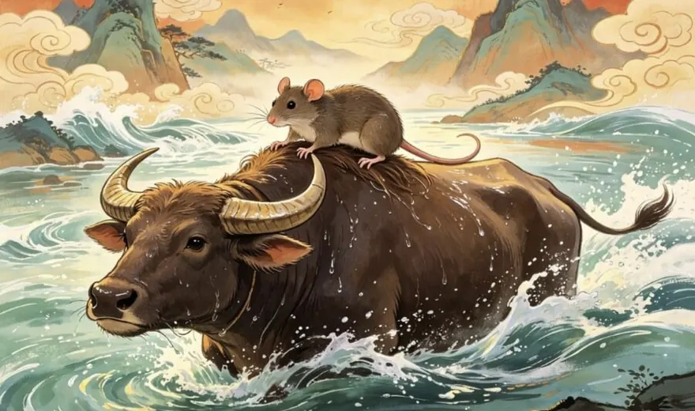
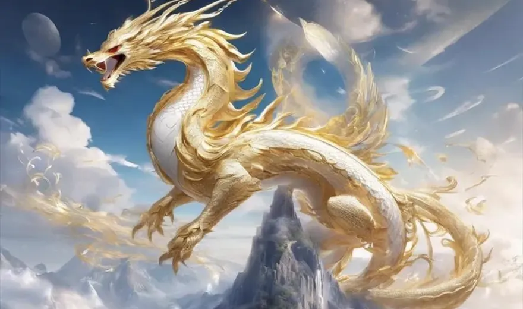
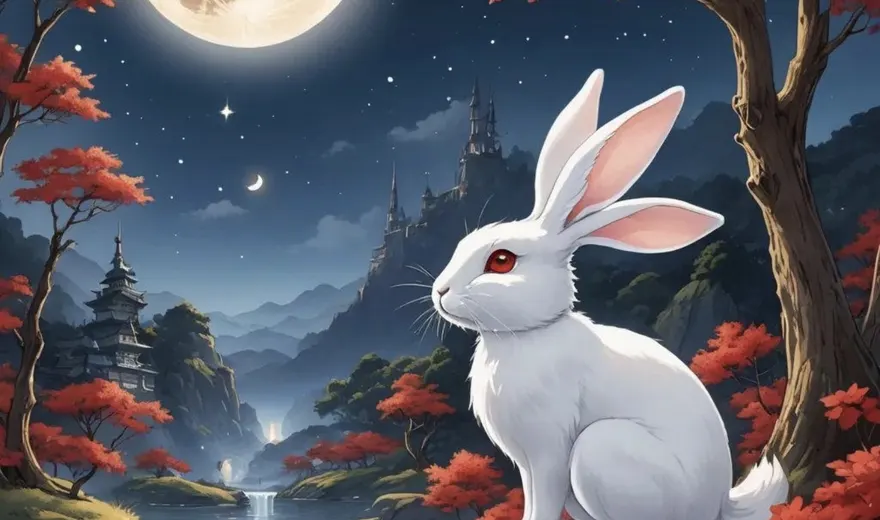
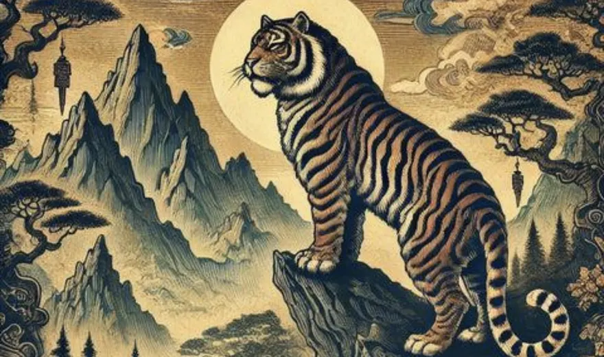
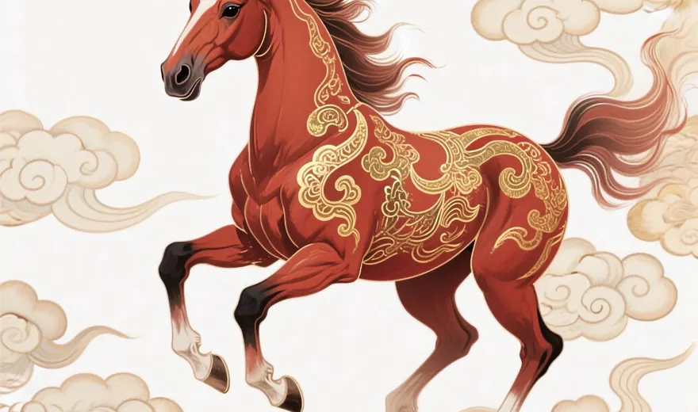
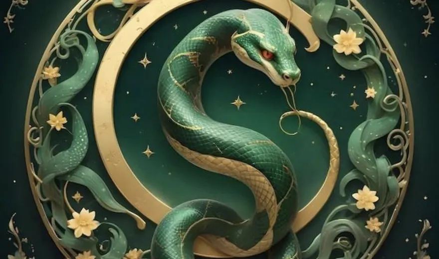
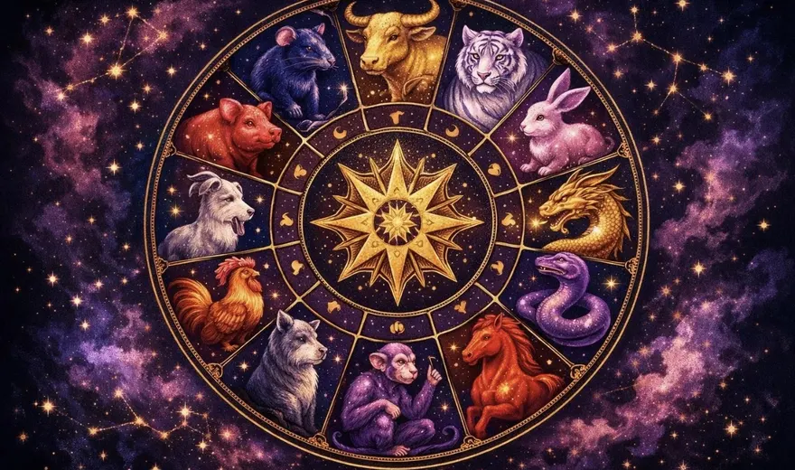

MyBirthSign Blog
Zodiac Stories & Legends
Why does the Rat come first? Why did the flying Dragon finish fifth? These are the stories people tell about the twelve animals of the Chinese zodiac, alongside what history actually records about where the animals came from.

The Great Zodiac Race: How the 12 Animals Earned Their Places
The folk tale of the river race that set the order of the twelve animals, and the Cat who never made it.
Read the story →
Why the Rat Came First in the Chinese Zodiac
A ride on the Ox, a leap at the finish, and a Cat left behind: the legend of the Rat's victory.
Read the story →
The Dragon's Legend: Power, Wisdom, and Good Fortune
The flying Dragon arrived fifth on purpose: a legend about power used kindly, and what the dragon means in Chinese culture.
Read the story →
The Rabbit's Clever Crossing: A Zodiac Legend
Stepping stones, a floating log and a helping breath from the Dragon: how the Rabbit won fourth place, and the legend of the moon rabbit.
Read the story →
The Tiger in Chinese Culture: Courage and Strength
King of beasts, guardian of the west and protector of children: the tiger's place in Chinese culture and the zodiac.
Read the story →
The Horse in the Zodiac: Freedom and Determination
Speed, freedom and success: what the horse means in Chinese culture, and the surprise that cost it sixth place in the Great Race.
Read the story →
The Snake's Place in the Great Zodiac Race
A quiet ride on the Horse's hoof and a perfectly timed move: the Snake's legend, and why it is called the little dragon.
Read the story →
Why Are There 12 Animals in the Chinese Zodiac?
The Earthly Branches, the Year Star and the oldest records: the history behind the number twelve, and the legends that explain it.
Read the story →Explore more
- Find your zodiac animal →
- All 12 zodiac animals →
- Year of the Rat guide →
- Year of the Dragon guide →
- Khmer animal years →
- Zodiac compatibility guide →
- How to calculate your zodiac sign →
- Today's zodiac fortune →
The Great Race and the other tales here are folk tales, told in many versions; they are not historical events. Personality traits are traditional zodiac beliefs, shared for culture and entertainment.
← Back to the MyBirthSign Blog